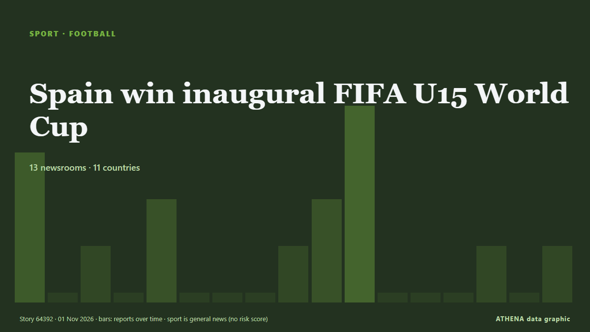

Spain win inaugural FIFA U15 World Cup

Spain won the inaugural FIFA Under-15 World Cup and Festival after defeating the Czech Republic 3-0 in Friday’s final in Baku, Azerbaijan. de Trinidad Express
Informado de forma independiente por 13 medios de 11 países desde el 27 oct; el primero fue Hespress English; la cobertura va perdiendo fuerza. Deportes y cultura se archivan sin evaluación de riesgo. La confianza es del 91 % (alta): lo corroboran 13 medios independientes, con una fiabilidad media de las fuentes del 72 %. Medios por país: Kirguistán (3), Corea del Sur (2), Nigeria (2). Cobertura: del 27 oct al 1 nov, 99 horas.
Qué ha cambiado: 2 informaciones nuevas de 2 redacciones en las 24 horas hasta el 1 nov.
Primer titular: FIFA to inspect candidate cities for 2030 World Cup in Spain, Portugal and Morocco
Los titulares se muestran en inglés, tal como se publicaron.
De un vistazo
Seleccionado, puntuado y redactado por la metodología publicada de ATHENA. Ningún editor interviene en eventos concretos. Cómo se elabora ›
| 27 Oct 23:18 UTC | 3 |
|---|---|
| 28 Oct 05:18 UTC | 0 |
| 28 Oct 11:18 UTC | 1 |
| 28 Oct 17:18 UTC | 0 |
| 28 Oct 23:18 UTC | 2 |
| 29 Oct 05:18 UTC | 0 |
| 29 Oct 11:18 UTC | 0 |
| 29 Oct 17:18 UTC | 0 |
| 29 Oct 23:18 UTC | 2 |
| 30 Oct 05:18 UTC | 2 |
| 30 Oct 11:18 UTC | 4 |
| 30 Oct 17:18 UTC | 0 |
| 30 Oct 23:18 UTC | 0 |
| 31 Oct 05:18 UTC | 0 |
| 31 Oct 11:18 UTC | 1 |
| 31 Oct 17:18 UTC | 0 |
| 31 Oct 23:18 UTC | 1 |
Por qué estas cifras
Importancia
Riesgo
Confianza
La cobertura: quién informó y cuándo
titular tal como se publicó · abre el original- Hespress English · MarruecosFIFA to inspect six Moroccan cities as race to host 2030 World Cup final continues
- Express Tribune · PakistánFIFA to visit potential 2030 World Cup host cities
- Korea Herald · Corea del SurFIFA to inspect candidate cities for 2030 World Cup in Spain, Portugal and Morocco
- Portugal Resident · PortugalPJ police arrest Spain’s most wanted female fraudster
- 24.kg (English) · KirguistánWomen's football team of Kyrgyzstan drops two places in FIFA rankings
- Stuff · Nueva ZelandaRugby World Cup carrot: Why Highlanders coach backs All Blacks to fire in 2027
- The Korea Times · Corea del SurMoreno tries to deal with uncertainty in Korean football
- 24.kg (English) · KirguistánFIFA U15 World Cup and Festival: Kyrgyzstan loses to China
- Tehran Times · IránIran come sixth at FIFA U15 World Cup & Festival 2026
- 24.kg (English) · KirguistánFIFA U15 World Cup & Festival: Kyrgyzstan finishes 52nd among 189 teams
- Channels TV · NigeriaFlamingos’ World Cup Form Offers Hope For Super Falcons’ Future
- News Agency of Nigeria · NigeriaMorocco 2026: Flamingos edge Mexico 2-1, reach quarter-finals
- AzerNews · AzerbaiyánPresident Ilham Aliyev watched FIFA U-15 World Cup and Festival final and attended award ceremony
- Anadolu Agency (English) · TurquíaFIFA plans to double 2027 Women's World Cup prize money to $220M: Report
- AzerNews · AzerbaiyánArsene Wenger praises FIFA U-15 tournament in Baku as Spain claims title
- Trinidad Express · Trinidad y TobagoSpain win inaugural FIFA U15 World Cup